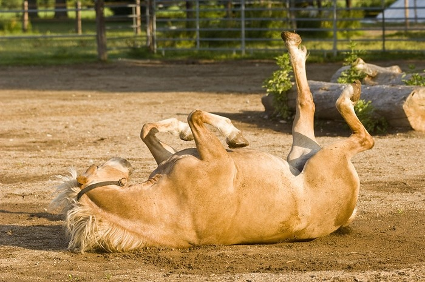

Der Wälzplatz
Das wälzen auf Sand, Matsch oder Schnee massiert die Muskeln, fördert die Hautdurchblutung, strafft das Bindegewebe, löst seelische und körperliche Verspannungen, mobilisiert die Wirbelsäule, entlastet den Stützapparat und pflegt Haut und Fell. Die Pferde lieben es sich auf einem Platz herumwälzen zu können.
